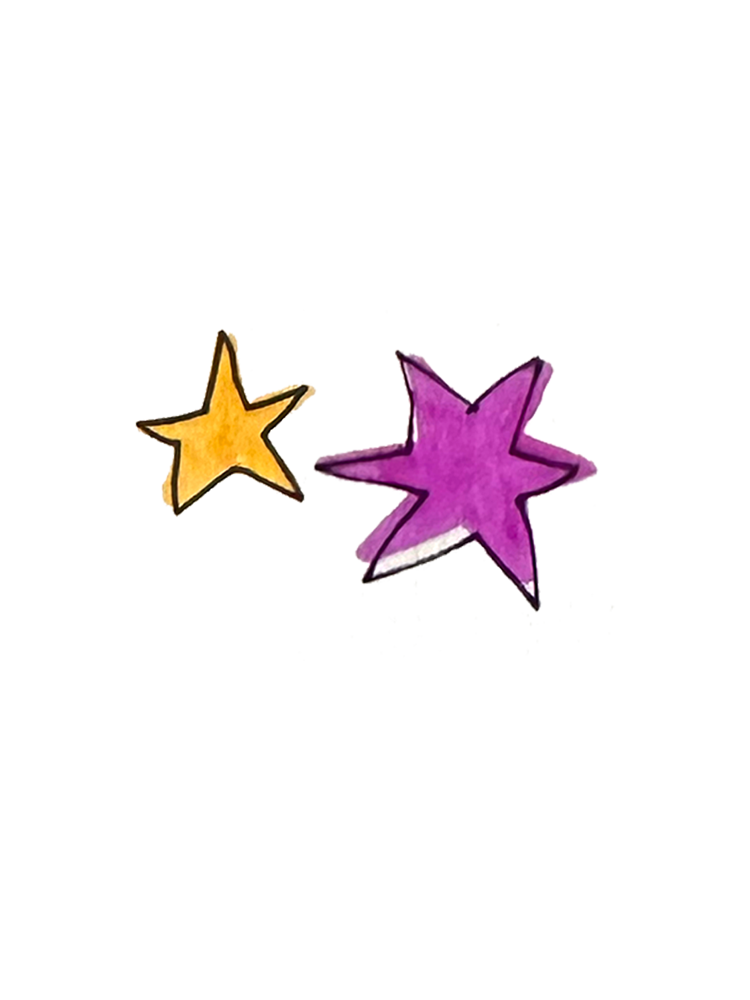
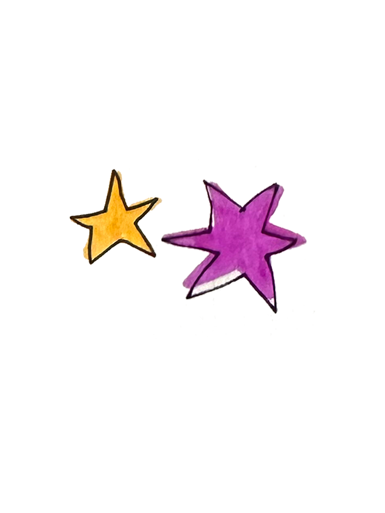

Advice 💬
home
Pose Thy Questions, That I May Answer!
Hi Serifina,
Hast thou ever met a human
who kept thy secret?
-Mossie M
Hast thou ever met a human
who kept thy secret?
-Mossie M
Help! My friend is troubled and heavy of heart. What words wouldst thou offer to soothe a mortal’s sorrow?
-Lavina Honeyglow
-Lavina Honeyglow
Fairest Serifina,
Which human art do thou find most curious or delightful?
-Quill Dewdancer
Which human art do thou find most curious or delightful?
-Quill Dewdancer
Yestermorn, I left a note upon a student’s desk, yet when I did watch him read it, his countenance grew troubled and forlorn. What steps dost thou taketh to ensure thy gifts are rightly understood by mortal hearts?
-silentwing
-silentwing
i’ve spent years leaving gifts and signs of magic for humans, but lately, they seem to no longer notice or feel my presence. how can i rekindle their wonder and my own passion for this work?
-a forgotten soul
-a forgotten soul
Dear Serifina,
I have watched humans from afar, seen their smiles, their sorrows, and their remarkable resilience. A part of me feels drawn to them in a way that I cannot ignore, but, my mother forbids contact. How can I honor the wisdom of our elders, yet follow my heart’s quiet plea to bring light to those who need it most?
-Daphne
I have watched humans from afar, seen their smiles, their sorrows, and their remarkable resilience. A part of me feels drawn to them in a way that I cannot ignore, but, my mother forbids contact. How can I honor the wisdom of our elders, yet follow my heart’s quiet plea to bring light to those who need it most?
-Daphne
Is it true that humans smell like… soggy leaves and swamp water?
-Anonymous
-Anonymous